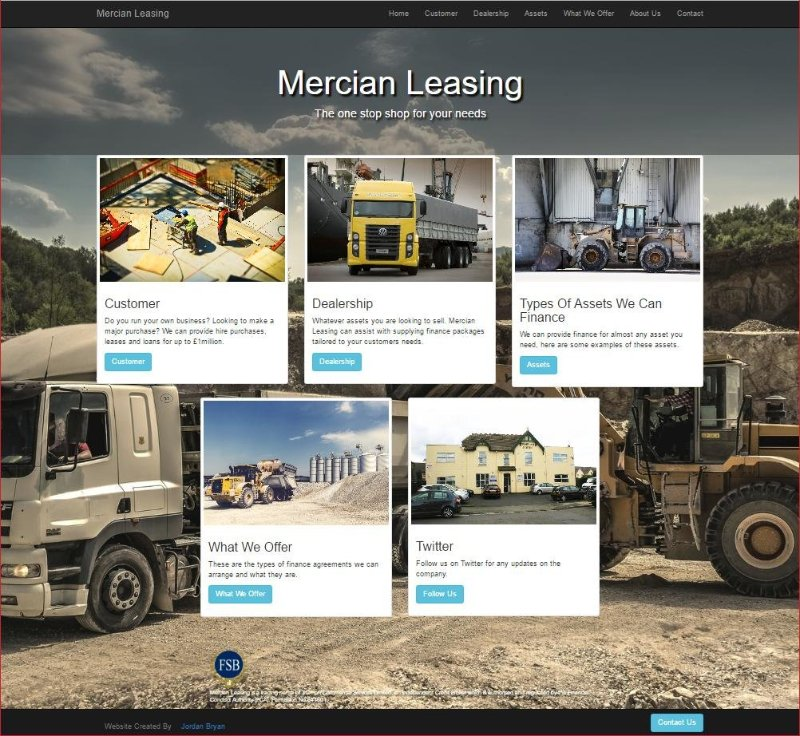

Jordan Bryan
Web Developer
Web Developer
Self-motivated and energetic person aiming to develop a career in IT. Dependable when working as part of a team or independently; both flexible and adaptable, and willing to work to new challenges. Passionate about delivering work to a high standard.
I am currently studying a Level 3 ICT course at South Staffordshire College in Cannock. I am currently studying on my course, web development, computer science, computer systems, digital graphics and animation, social media application in business and system security. My predicted grade for the coirse is distinction.
I was responsible for the creation of a new website for Mercian Leasing, as part of a work experience project for my course studies. The website was created using updated HTML5 and CSS3 semantics, implementing the Bootstrap web framework for a desktop and mobile-responsive experience.
Working with the web development team to create a responsive web page for a council website. The council development team wanted to test my skills by having me recreate an unresponsive website index page, however developing it to be responsive and mobile friendly I had a professional developer shadow me to fix any errors while also showing me simpler ways to implement styling to the webpage